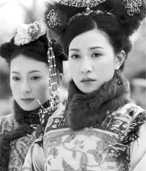
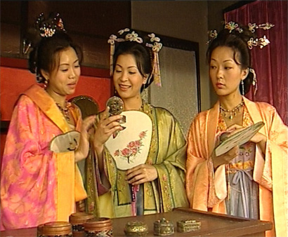
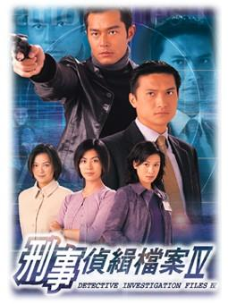

测试生成
中意TVB之至爱剧集
NO.1
《赌场风云》
（主演：欧阳震华苗乔伟 宣萱 黄宗泽
杨怡）
该剧虽然说无论题材、情节、人物设置都不算新鲜，可带给了两个让我有“惊艳”之感的人，一个当然是BO，另一个就是三哥苗乔伟。剧中“来富”和“乔正初”这两个角色，在我看来极大程度地发挥了BO和三哥的魅力。
而且，其中对“李青云”这个女人情感的讲述，也绝对让人认同！
NO.2
《寻秦记》
（主演：古天乐林峰 江华 宣萱 郭羡妮
滕丽明 雪儿）
穿越时空的题材并不少有，但该剧胜在对人物的塑造上，无论男主角、男配角或是女1、女2，都能给你很深的印象。
剧中“项少龙”的神奇经历，极大地满足了我内心渴望探险的愿望~
NO.3
《金枝欲孽》
（主演：邓萃文佘诗曼 黎姿 张可颐 林保怡
陈豪）
不可否认，女人戏总是会轻易地吸引住我，如果是剧情精良的就更加令我喜欢。

日剧《大奥华之乱》、《女系家族》让我看得惊觉人心的险恶；而这部讲述后宫女人斗争的《金枝欲孽》则使我感受到更多：剧中形形色色的女人，为争皇宠不择手段、花招百出，开始觉得人心叵测，后觉得其悲哀至极，剧中的她们从踏进那个如牢笼般的紫禁城开始，似乎就已是没有回头路了？
NO.4
《锦绣良缘》
（主演：林文龙文颂娴 郑中基 梅小惠
胡杏儿等）

其实，也不知道为何会把此剧列入其中，只是不可否认，只要有时间看电视，而又有台在播该剧时，我是一定会看的，虽然已经断断续续看过2-3遍了。
剧中借程府一大家所发生的事，让我看尽社会百态众生相，虽看似是一出闹剧，却也能会心一笑。
NO.5
《刑事侦缉档案Ⅳ》
（古天乐
宣萱陈锦鸿 佘诗曼 李珊珊 向海岚等）

一直都觉得TVB的刑侦题材剧作的不错，《900重案追凶》、《鉴证实录》《法证先锋》等都很喜欢。
而这部《刑事侦缉档案Ⅳ》除却依旧扑朔迷离的案件，剧中两大男主角徐飞和子山各自的情感故事则更加的精彩。
Ps：俏君和徐飞在经历过种种后却还是没能在一起，不能不让人觉得遗憾~